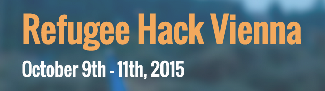

Das ist das Siegerprojekt des Refugee Hacks Vienna vom 9.-11. Oktober in Wien.

Stell dir vor, du kommst irgendwohin um als Freiwilliger zu helfen und stellst dort fest, dass du nicht gebraucht wirst, weil schon ausreichend Helfer vor Ort sind.
Where2Help ist ein einfaches Tool um freiwillige Helfer zur richtigen Zeit, in der richtigen Anzahl an den richtigen Ort zu bringen.
Organisationen und Helfergruppen können Hilfeanfragen erstellen. Alle angemeldeten Helfer bekommen über die App eine Benachrichtigung
und melden sich für die Aufgabe. Organisationen behalten den vollen Überblick, wie viele Helfer schon zugesagt haben und wie viele noch
gebraucht werden. Freiwillige Helfer wissen jederzeit wann und wo ihre Hilfe noch benötigt wird.
Verfügbar in Kürze für:
Created in 48h at the Refugee Hack Vienna.